1. ozon 卖家中心如何导出数据分析
1.1. 前言
你是否为 ozon 卖家中心后台数据分析无法导出而烦恼？
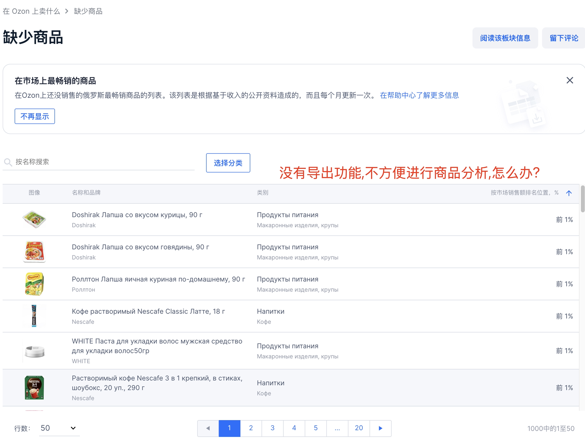
或者是热门商品中官方自带的导出功能,明明看到的是中文导出的却是俄语，哪一列对应什么完全摸不清头脑？
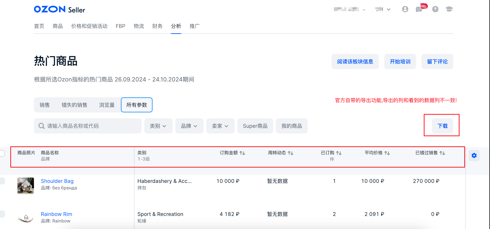
现在，他来了！
所见即所得导出热门商品，搜索查询以及缺少商品！
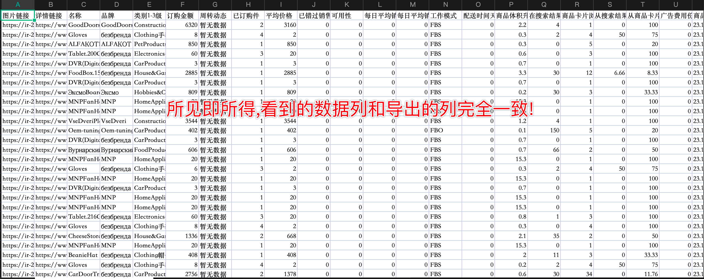
只要是看到的数据就能导出，不必再依赖于 ozon 的导出功能，基于 automa 浏览器插件实现自动化操作，早上起来电脑就早早为你准备好了一天的热门商品数据！
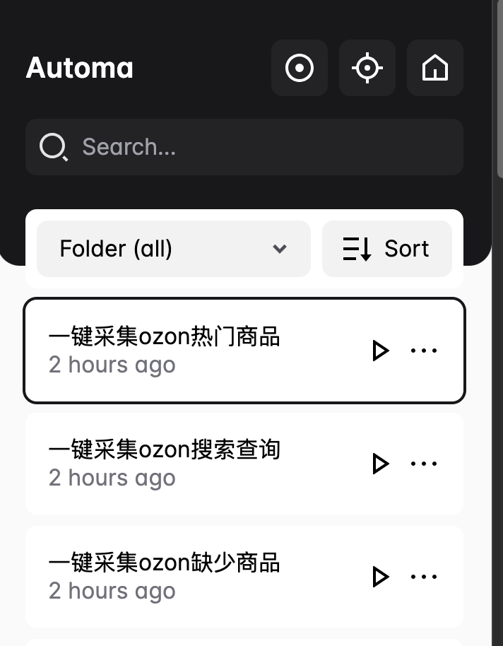
有任何安装使用疑问，欢迎咨询客服snowdreams1006_cn，真人在线助力 ozon 大卖无忧！
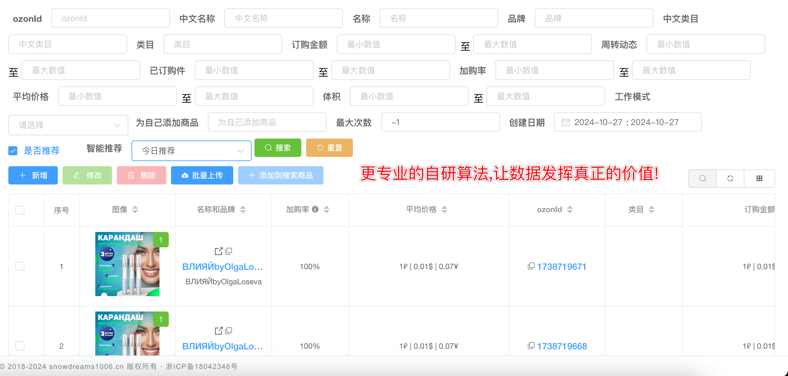
立即下单
【淘宝】http://e.tb.cn/h.gC4w7oOnEeCc0aP?tk=4UWG3M8LpPL MF6563 「ozon运营教程店铺跟卖软件测评热门商品关键字缺少商品导出」 点击链接直接打开 或者 淘宝搜索直接打开
1.2. 安装谷歌浏览器
打开您正在用的任意浏览器,搜索"谷歌浏览器"下载第一个无广告的应用.
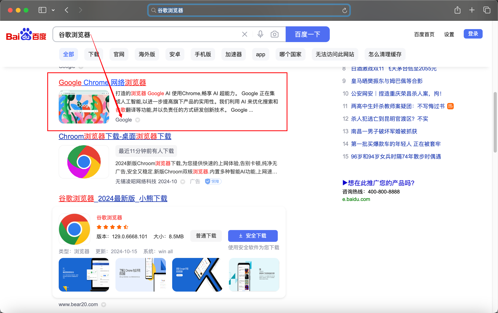
谷歌浏览器下载地址: https://www.google.cn/intl/zh-CN/chrome/
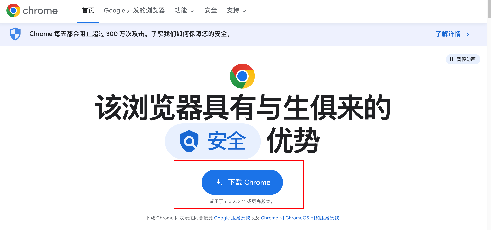
这里以Mac电脑为例,下载后安装步骤大概如下:
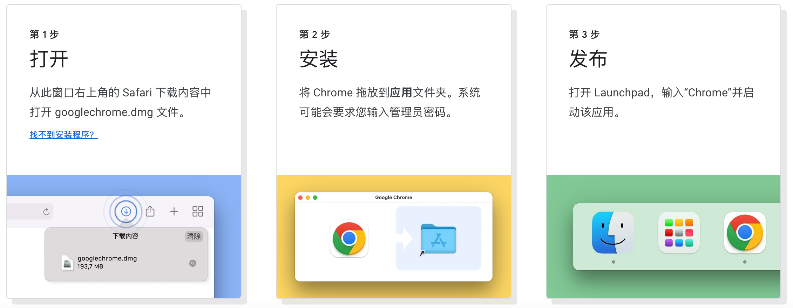
如果是Windows电脑安装步骤也是类似的,三步走!
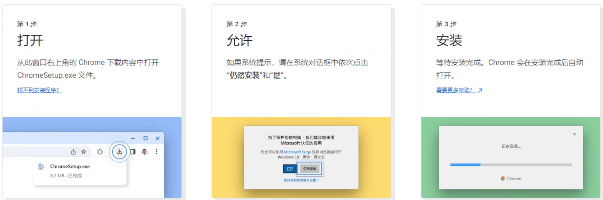
1.3. 安装 automa 插件
同样的方式,搜索"automa"浏览器插件并下载安装到谷歌.
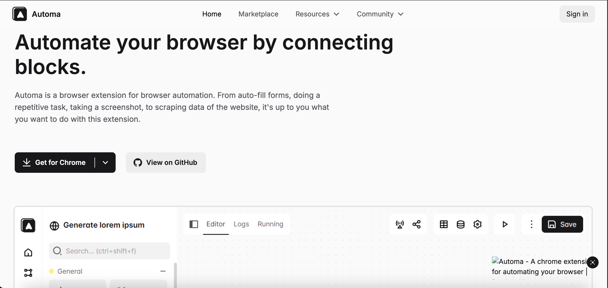
如果因为网络问题无法下载暗账,也可以从网盘链接中直接下载automa.crx!
在浏览器中输入地址 chrome://extensions/ 然后回车或者手动右上角打开关于>>扩展程序>>管理扩展程序面板.
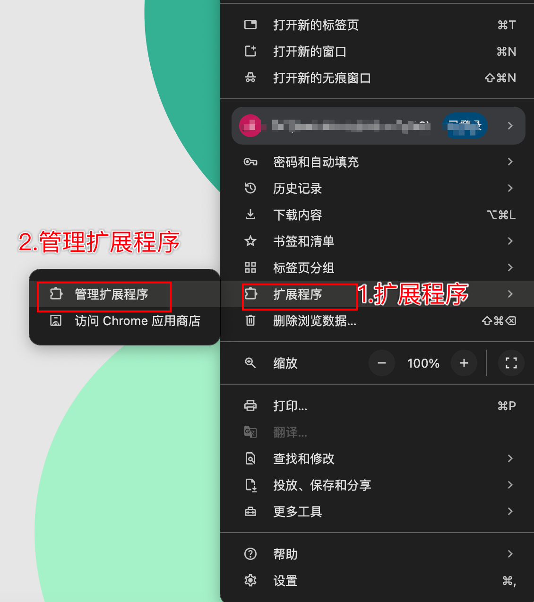
在右上角打开 “开发者模式” 小开关,将刚才的automa.crx文件直接拖拽到 Chrome 扩展管理页面即可自动安装完成!
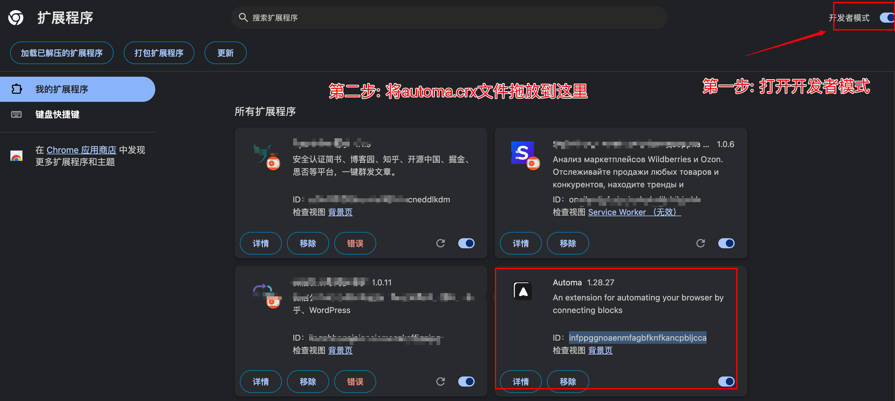
安装成功后,Chrome 扩展管理页面会出现automa插件面板,同时谷歌浏览器右上角扩展程序也能看到 automa 图标.
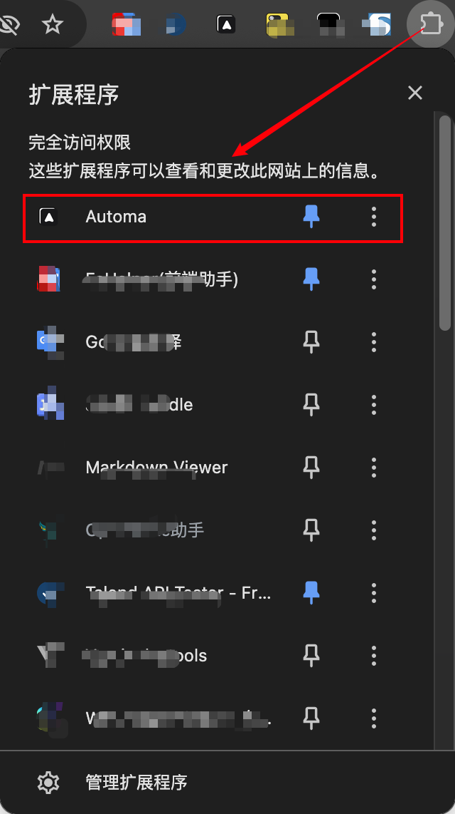
1.4. 导入一键采集规则
安装automa浏览器插件并打开主页面板
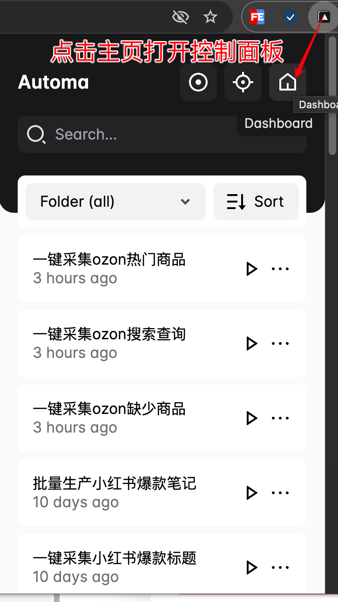
选择"创建工作流>>导入工作流",将一键采集ozon缺少商品.json文件导入到本地.

1.5. 直接运行看效果
在浏览器右上角 automa 面板找到一键采集 ozon 缺少商品工作流手动运行.
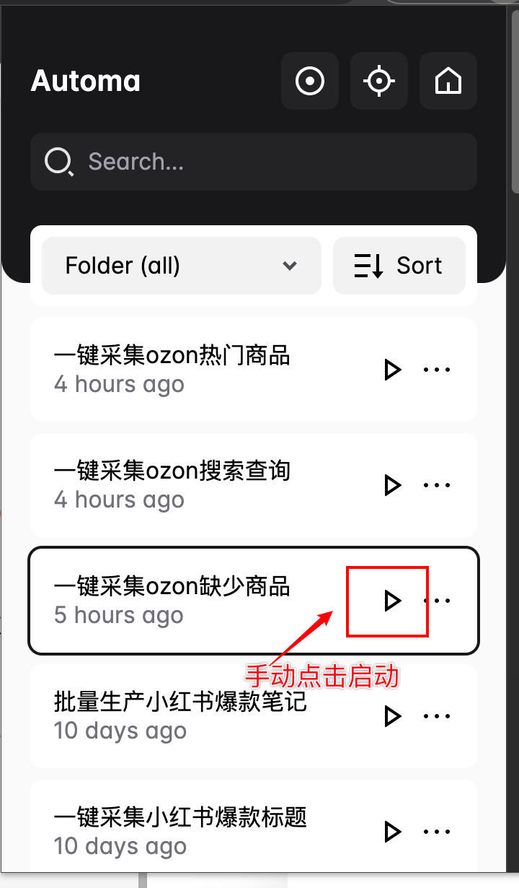
全自动采集,无需人工干预,导出文件,效果和网页看到的一模一样!
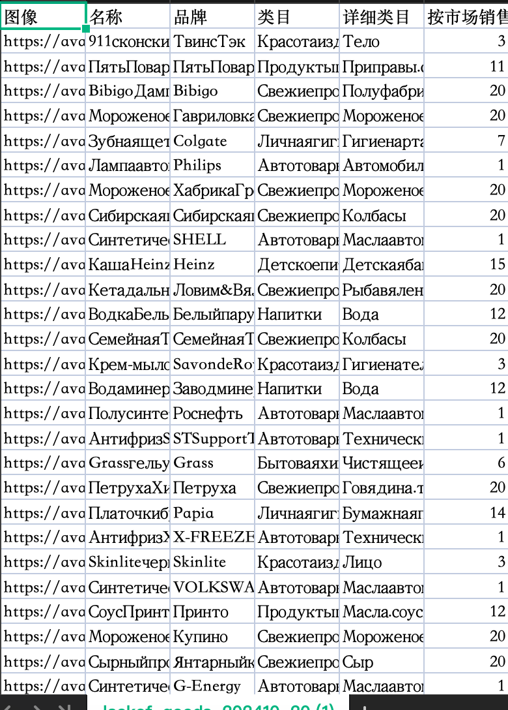
1.6. 总结
本次分享的网盘资源共包括 3 款自动化插件工具,依次导入到 automa 浏览器插件可实现自动下载数据分析报表.
大致分为以下三步,详情请参考: https://blog.snowdreams1006.cn/automa/ozon-seller-excel.html
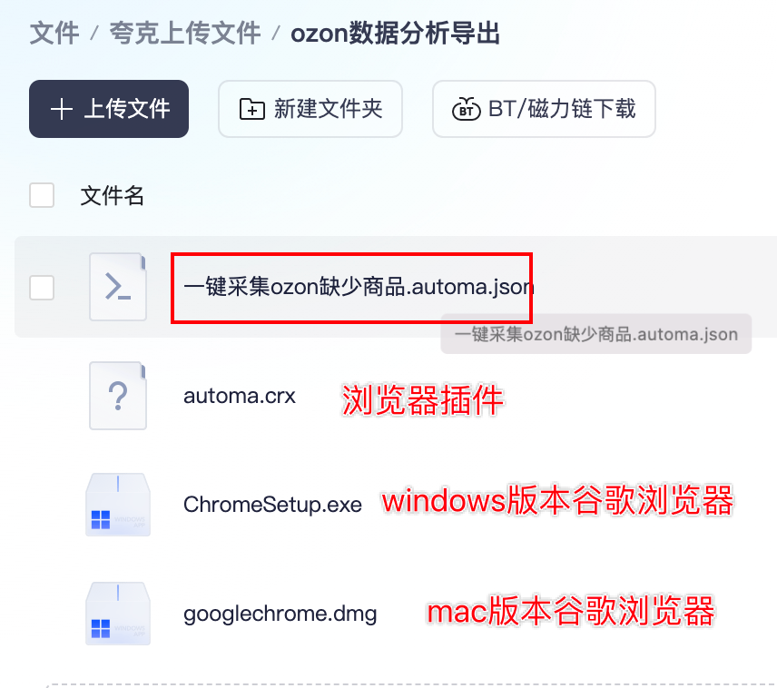
如果能正常访问网络,按照上述教程中提供的步骤一步步操作即可,不能访问也可以直接用网盘分享的链接下载使用.
- 如果没有谷歌浏览器,则先根据电脑系统安装谷歌浏览器,已安装则忽略.
- 在谷歌浏览器中安装 automa 浏览器插件,打开开发者模式直接拖拽即可.
- 将一键采集工作流导入到 automa 插件,即可手动运行或定时运行.
郑重承诺相关插件提供永久更新,有问题及时反馈第一时间及时处理,专业靠谱!
作者: 雪之梦技术驿站
来源: 雪之梦技术驿站
本文原创发布于「雪之梦技术驿站」,转载请注明出处,谢谢合作!